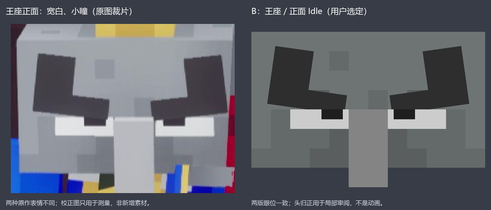
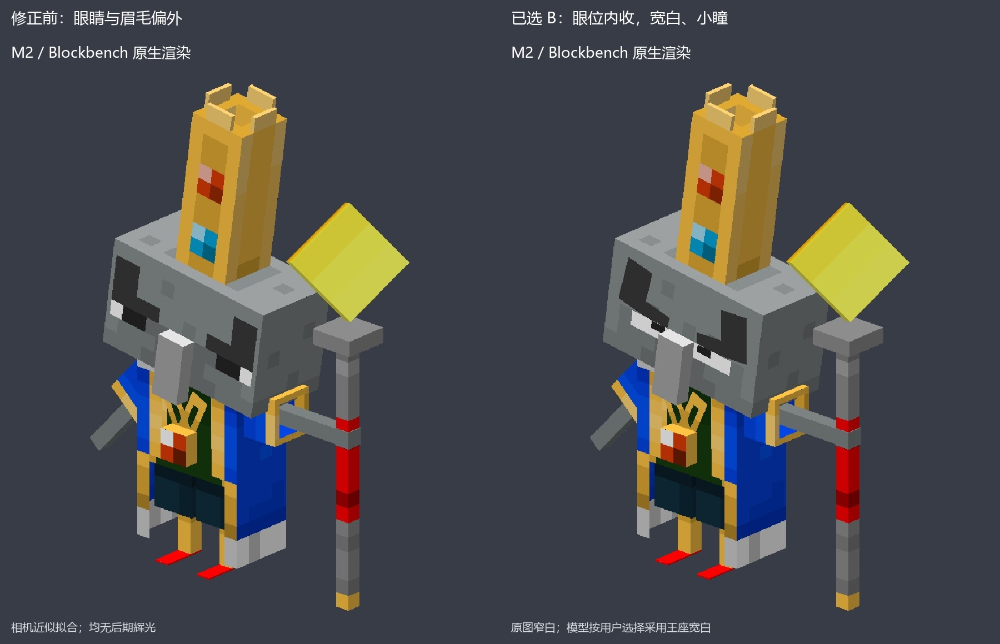
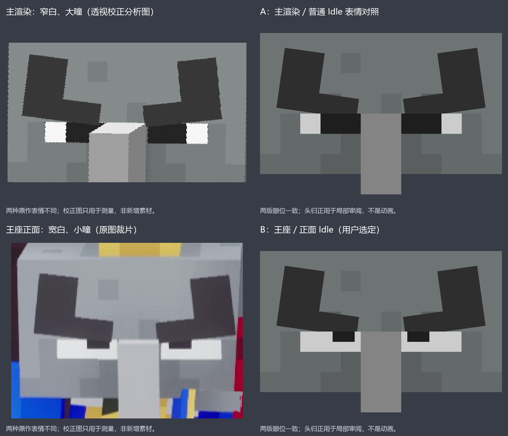
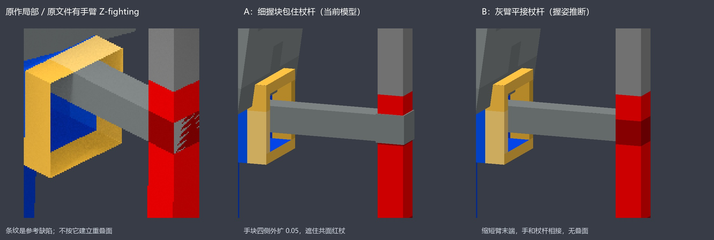
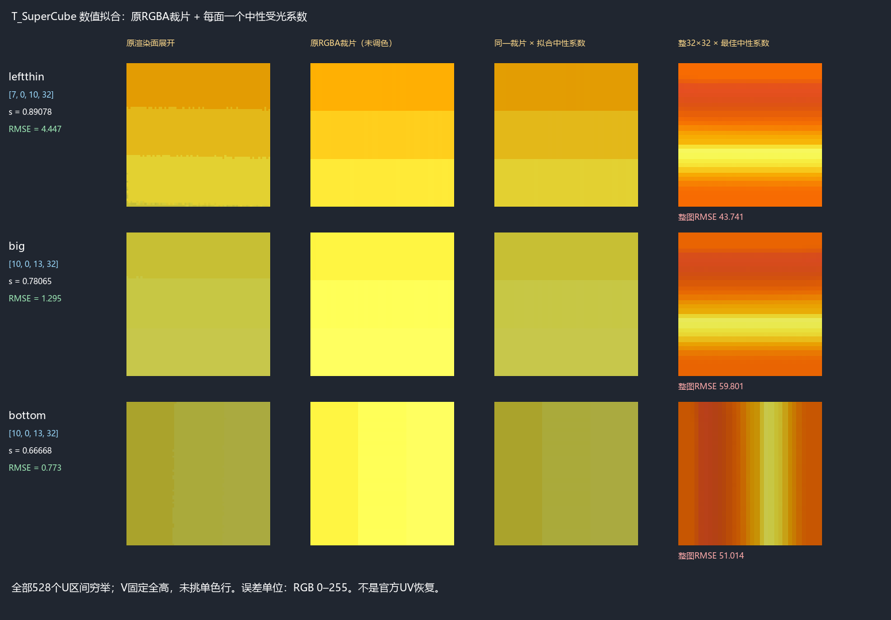

教皇 · M2 静态审阅
12个显示部件 · 原贴图单图集 · 身高2.6格 · 动画0段。当前等待静态外形与握杖方案确认。原生Blockbench渲染，未在真实游戏内看过。
正面参考是坐姿，侧背参考来自动图；模型均为同一站姿。权杖目前使用无发光原材质的数值UV拟合，没有添加粉紫辉光。
用户已选眼神 B：王座宽白、小瞳
眼睛修正前后
眼神 A/B 与各自原作依据（当前眼神 B）
主图对照（眼神依用户选择为B） 正面：坐姿参考 / 站姿模型，均为王座宽白眼神
正面：坐姿参考 / 站姿模型，均为王座宽白眼神 侧面：转身参考 / 站姿模型
侧面：转身参考 / 站姿模型 背面：飞起参考 / 站姿模型
背面：飞起参考 / 站姿模型 模型正交多视角
模型正交多视角 握杖 A/B（当前握杖 A）
握杖 A/B（当前握杖 A）
权杖 UV 数值拟合
素材版权归Mojang；本项目非商业，与Mojang无关联。来源与署名